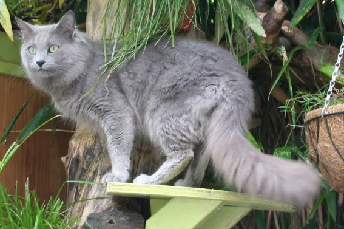

The Nebelung cat not really a longhair or shorhair, but has rather medium length hair and is very intelligent. It is a rather rare breed, with its name coming from the German word "Nebel" meaning mist/fog. It has a very distinct bluish-grey colored fur and pretty green eyes.
